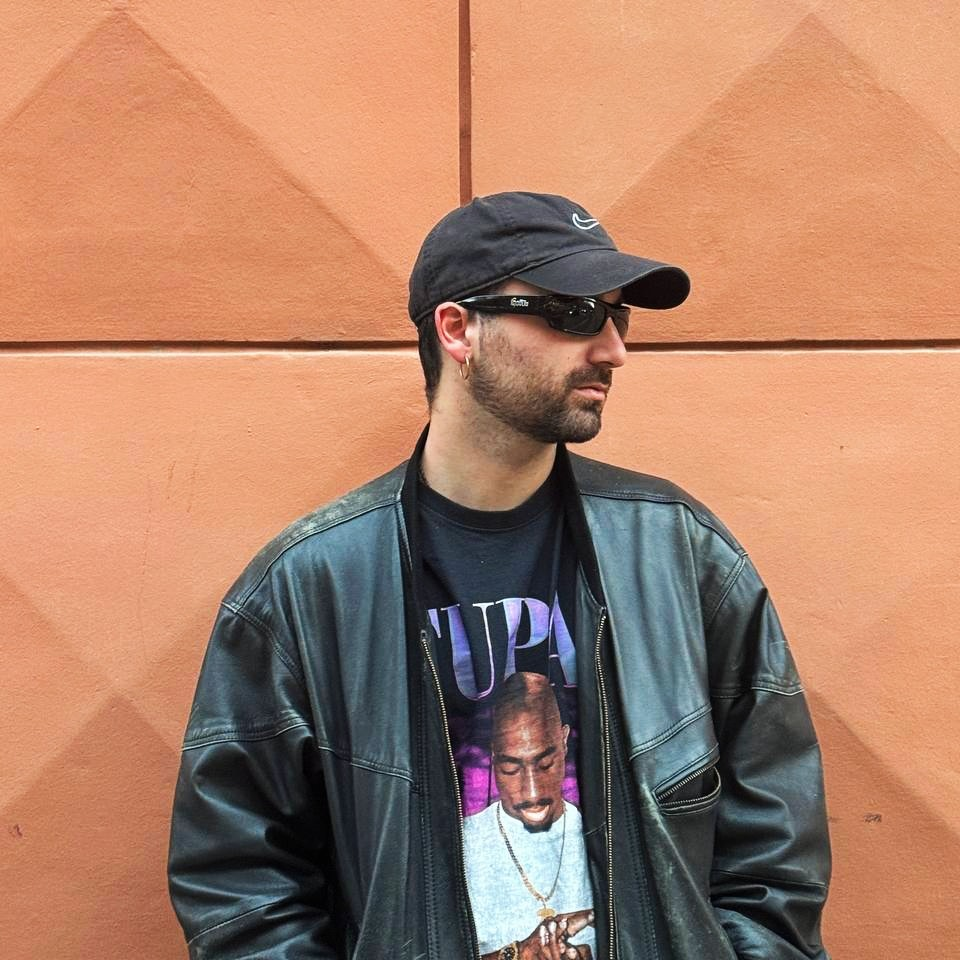

QUANTUM.909 ↗
Founder
Event format and independent imprint developed around raw minimal house, club-driven music and a direct artistic identity.

Based in Turin, Rulez builds dancefloor-focused sets around minimal, rominimal and minimal house. Vinyl, digital or hybrid: the format changes, the priority stays the same — groove, tension and a direct read of the room.
In the studio, Rulez follows a hardware-oriented workflow focused on raw, effective club tracks. He is the founder of Quantum Records, an independent imprint created to release his own music and develop a precise vision of contemporary minimal.
Performance first. A flexible setup built around the club, the room and the moment.
Storytellers
After Rave
Rayzeh
Event format and independent imprint developed around raw minimal house, club-driven music and a direct artistic identity.
Club and open-air event series curated around a deeper, hypnotic and forward-facing minimal sound.
Earlier event project developed in the Aosta Valley. A formative chapter in Rulez's approach to crowd reading, curation and building electronic music events from the ground up.